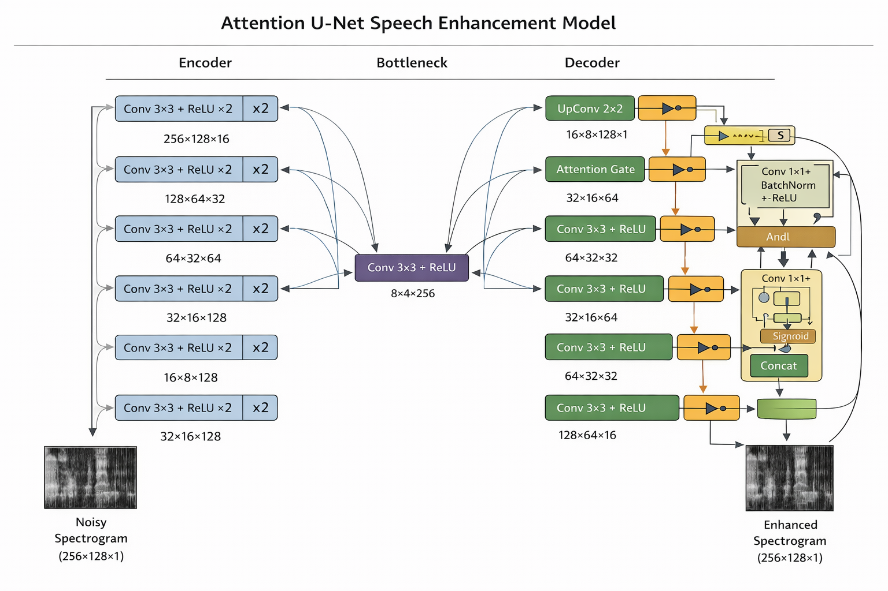

Introduction
Speech enhancement is critical for autonomous driving systems, where accurate voice command recognition must work despite significant road noise, wind, and engine sounds. This research demonstrates a novel approach to suppress background noise while preserving speech quality and intelligibility for robust voice interface systems.
Architecture
Our model employs a deep neural network-based architecture designed to:
- Analyze spectrograms of noisy speech signals
- Learn noise patterns from diverse driving conditions
- Generate clean speech predictions with minimal distortion
- Optimize for real-time inference on embedded systems

Results
Our proposed model demonstrates significant improvements in speech enhancement metrics across key performance indicators on VoiceBank-DEMAND dataset. We split the test set of the dataset into 50% dev/test set: With the enhancement model achieving a STOI of 0.927 and a PESQ of 3.651, compared to the noisy input's STOI of 0.911 and PESQ of 2.894.
| Method | STOI (↑) | PESQ (↑) | Loss (↓) |
|---|---|---|---|
| Noisy Input | 0.911 ± 0.07 | 2.894 ± 0.75 | 3.9903 |
| Proposed Model | 0.927 ± 0.06 | 3.651 ± 0.59 | 0.7321 |
| Improvement | +0.017 | +0.756 | -3.2583 |